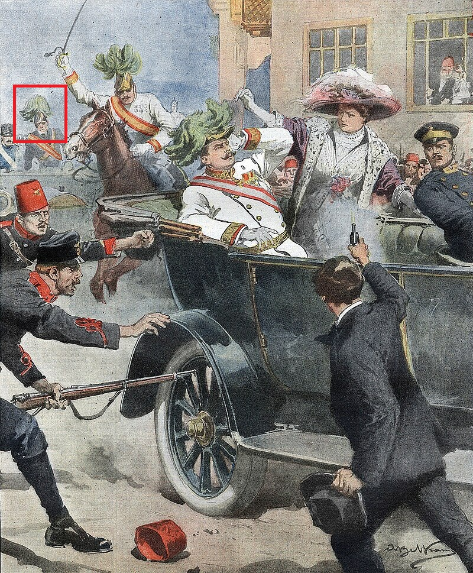

1910–1914: The Light Extinguished
The Final Act of a Long Performance
By 1910, the indomitable Sir Stanley Rawlinson had, at last, begun to ease his pace. Ninety-six years old and still possessed of a formidable intellect, he was largely based once again in Mayfair, where he could be found most afternoons ensconced in the leather armchairs of the Athenaeum or the Reform Club, offering wry commentary on a world that seemed increasingly alien to him. His famous letters to The Times continued, but their frequency — and their fire — diminished as his circle within government inevitably thinned and his appetite for political sparring waned.
Nevertheless, he remained a fixture of London society. His famed dining society, once the preserve of grandees and generals, now drew artists, writers, and the odd eccentric peer. H.G. Wells, George Bernard Shaw, and the painter Sargent were among those known to have attended his soirées in these years. As one guest recalled, "the conversation sparkled, the port flowed, and Sir Stanley, though stooped and grey, still presided like a field marshal over a particularly unruly brigade."
Travel, once the great passion of his youth, was now restricted to the Continent and to shorter intervals — a concession, perhaps, to his advancing years rather than to any dwindling curiosity.
Fateful Habsburg Friendship

Sir Stanley with the Archduke, Sarajevo, 28 June 1914
Among the friendships that endured into Stanley's twilight was that with the Austro-Hungarian Archduke Franz Ferdinand and his wife, the Duchess Sophie. The bond had been forged decades earlier, during encounters in Australia and Bohemia in the 1890s, and it was deepened by Stanley's instinctive sympathy for Sophie's plight within the rigid hierarchies of the Habsburg court.
Deemed unworthy of her husband's rank, Sophie had been granted only a morganatic marriage — a cruel arrangement that denied her all rights of inheritance, title, and ceremony, even forbidding her attendance at public functions beside her husband. The Emperor, Franz Josef, had consented only under duress. At the wedding in 1900, not a single senior member of the imperial household was present. Stanley, however, was — and wrote afterwards to a friend describing it as "a ruddy good shindig to put old FF's days of rambunctiousness behind him."
Outraged by the Emperor's treatment of the couple, Stanley dispatched one of the most blistering letters of his long and well-practised career in invective. In it, he denounced Franz Josef's stance as "antiquated, pedantic, and downright tomfoolish," before accusing him of being "a crapulent oaf with more than a modicum of privilege stuffing up your more than ample sphincteral opening."
There is, perhaps unsurprisingly, no record of a reply.
Yet despite the diplomatic silence, the Rawlinson–Habsburg friendship endured. Franz Ferdinand valued Stanley's plain speaking and independent mind; the Duchess, his warmth and loyalty. Their correspondence in these final years is marked by genuine affection — a curious, human thread woven through the tightening fabric of European crisis.
The Last Journey

The assassination, Sarajevo, 28 June 1914
On 28 June 1914, Stanley accompanied the Archduke and Duchess on military inspections in Sarajevo. It was one of the few contexts in which Sophie was permitted to appear at her husband's side — for the cruel compromise of her marriage allowed her presence only when he acted in a strictly military capacity. Ever resourceful, Franz Ferdinand had taken to arranging such engagements to coincide with personal travel, occasionally riding in open-topped cars to allow Sophie to share, briefly, in the trappings of public life.
That morning's grenade attack had unnerved many of the party, but not the Archduke — nor, characteristically, Sir Stanley. During the subsequent reception at Sarajevo Town Hall, the Mayor, visibly shaken, asked whether the British guest feared for his safety. Stanley reportedly laughed and replied, "Nonsense, sir — I never duck for bullets that are not meant for me."
Still, he urged caution. According to eyewitness accounts, as the royal party prepared to depart, Stanley joined Baron Rumerskirch, the Archduke's chamberlain, in a final attempt to persuade Franz Ferdinand to remain within the safety of the building until more secure transport could be arranged.
Rumerskirch later recalled:
"As the couple and attendants descended the stairs to exit the building, Rawlinson joined me in a spirited attempt to convince His Royal and Imperial Highness to remain within the safety of the building until a safer transport had been summoned. Of course, the Archduke would have none of it, believing the earlier attack to have been an isolated incident. His Highness reminded Rawlinson that this was one of the rare occasions when the Duchess could share in the trappings of office, and seeing that his mind was not for changing, Rawlinson gracefully retreated, stating 'very well FF, far be it from me to enforce common sense over the supranatural force of the human heart!' And thus the three descended into the street on that most fateful of days."
Moments later, as the motorcade stalled near the Latin Bridge, Serbian nationalist Gavrilo Princip stepped forward from the crowd. His first bullet struck the Duchess; his second, meant for the Archduke, ricocheted from a fire hydrant, passing through the windscreen of the following car — and into the temple of Sir Stanley Rawlinson.
The old statesman died instantly, before Princip fired the fatal shot that claimed his intended target.
Selected Obituaries


Epilogue
Thus ended, at the age of one hundred, the extraordinary life of Sir Stanley Rawlinson — soldier, diplomat, poet, and contrarian. That he should perish in the same volley that ignited the Great War is one of history's darker ironies: the lifelong peacemaker felled by the bullet that would plunge Europe into carnage.
In the months that followed, his passing was overshadowed by the cataclysm his death helped to herald. Yet in quiet corners of London's clubs, and in the surviving letters of his many friends, one finds tributes of warmth and wonder. "He outlived his century," wrote H.G. Wells, "and embodied it — brilliant, exasperating, and gloriously alive to the last."
The light, at last, was extinguished — but not before it had illuminated nearly every corner of the world it left behind.
Postscript: After the Curtain Falls
Stanley Trafalgar Rawlinson was buried, fittingly, not in the family plot at Luton, but in a small cemetery just outside Vienna — one of many cities whose intrigues he had alternately needled and charmed for half a century. His funeral, hastily arranged amid the turmoil of late June 1914, was attended by a curious mix of diplomats, writers, and military men, all of whom seemed unsure whether they were bidding farewell to a relic of the past or the herald of an age that would never return. Within weeks, the guns of August drowned out the eulogies.
In the decades that followed, his name faded quietly from the public imagination. His papers were scattered; his published works became bibliographic curiosities; his achievements were overshadowed by the enormity of the century he did not live to see. Yet among those who study the margins of empire and diplomacy, Sir Stanley remains a figure of fascination — a man who seemed to personify both the reach and the absurdity of the age he helped to shape.
As one later historian noted, "If Rawlinson had not existed, the Victorians would have had to invent him — and indeed, in some respects, they did."